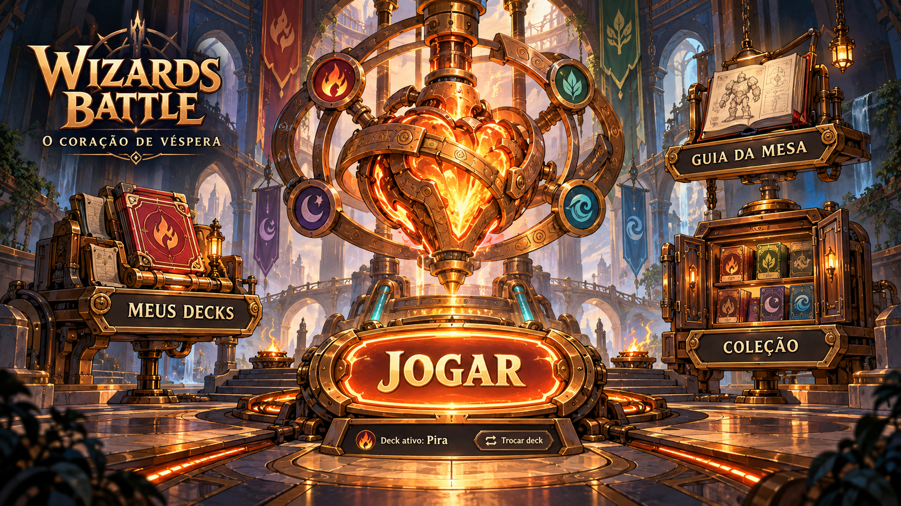

Reprodução isolada: Eco dos Soterrados vira fonte; no seu próximo Despertar ele expira; você sacrifica Silenciar o Motor. Compare a regra atual, a variante existente e a proposta de Vínculos. Estes controles não afetam partidas.
Na proposta, criar uma fonte registra +1 de presença permanente por escola da carta. Fontes ativas não somam novamente; monstros e encantamentos continuam somando. A energia ainda reinicia no Despertar; duração e Cinzas seguem a regra original. Cartas híbridas deixam um vínculo em cada escola. Nenhuma regra de partida foi alterada.
Dados exportados de um modelo determinístico; transições base e duração integral comparadas ao motor real em testes. A proposta ainda precisa de integração no motor/bot e playtest: acesso a custos de escola e misturas de escolas fica mais fácil. Isto não comprova balanceamento das 80 cartas.